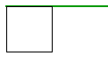
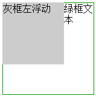
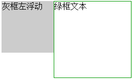
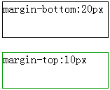
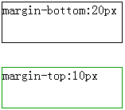

前几天在看flex布局的时候遇到了BFC这个概念，于是顺便看了几篇相关的文章，了解了几种上下文布局的基本概念，归结如下。
今天在看flex布局的时候遇到了BFC这个概念，于是顺便看了几篇相关的文章，了解了几种上下文布局的基本概念，归结如下。
FC的全称是：Formatting Contexts（格式化上下文），是W3C CSS2.1规范中的一个概念，具体包含了BFC、IFC、GFC、FFC四种。它们是页面中的一块渲染区域，并且各自拥有一套渲染规则，它决定了其子元素将如何定位，以及和其他元素的关系和相互作用。
BFC
BFC(Block Formatting Contexts)意为“块级格式化上下文”。就是页面上一个独立的渲染区域，只有Block-level Box参与，该区域拥有一套渲染规则来约束块级盒子的布局，且与区域外部无关。
如何生成BFC呢：
- float的值不为none；
- overflow的值不为visible；
- position的值不为relative和static；
- display的值为table-cell,table-caption何inline-block中的任何一个。
举几个例子说明下BFC的具体作用：
(1) 包含浮动元素
问题：父子div中的子div设置了浮动，父元素会发生高度坍塌，造成上下边界重合。

解决：触发父div的BFC布局，使元素的渲染不受外部元素的影响。比如可以按需设置position: absolute;或者overflow: hidden;。
(2) 不被浮动元素覆盖
问题：兄弟div中的哥哥div设置了浮动，弟弟div会被哥哥div遮挡。

解决：触发弟弟div的BFC布局，使弟弟div不受外部元素影响。比如给弟弟div设置overflow: hidden;之后：

(3) 阻止外边距重叠
问题：在普通流中，根据BFC规则，块级元素在竖直方向上的margin是会重叠的，二者之间的margin最终会以大者为准。例如下图两框之间的margin就只有20px：

解决：这里margin会重叠的根本原因就是二者同处在一个BFC独立区域内，适用BFC布局规则（也就是竖直方向的margin会重叠）。解决这个问题的关键就是为其中一个框单独设置BFC区域，使它与外部区域隔离开。这里为绿框div设置float: left;，使其成为拥有BFC的元素，它就不受外部影响了，于是margin就变成了30px：

感悟
进一步总结一下：为何(3)中设置了float: left;之后就不适用BFC规则了呢？这里面到底有什么“神秘的规则”在主导着？
在w3关于BFC的描述章节中（CSS21-9.4.1）可以找到如下一段话：
Floats, absolutely positioned elements, block containers (such as inline-blocks, table-cells, and table-captions) that are not block boxes, and block boxes with ‘overflow’ other than ‘visible’ (except when that value has been propagated to the viewport) establish new block formatting contexts for their contents.
大致意思是：浮动元素、绝对定位元素、不是块级盒的块级包含块(比如inline-block、table-cell、table-capation)、overflow值不为visible的块级盒子，为它们的内容建立了一个新的块级排版上下文。
可以发现：这里提到的这几类元素就是开头提到的生成BFC的那几种途径。BFC的官方文档规定了BFC的作用范围仅限于普通文档流，以上四类元素由于脱离了普通流，它们就可以用于建立新的BFC作用范围（块级排版上下文）。
再回到问题(3)中来：上面的绿框设置了float: left;后，它已经变成了一个新的块级排版上下文，独立于外部的上下文，所以内外之间已经不适用BFC规则了，于是margin也就不重叠了。
IFC
IFC(Inline Formatting Contexts)意为“内联格式化上下文”，IFC中，盒子依次水平放置，从包含块的顶部开始。
GFC
GFC(GridLayout Formatting Contexts)意为“网格布局格式化上下文”当一个元素设置为display:grid;的时候，此元素将获得一个独立的渲染区域，可以在网格容器上定义网格行和列，为每一个网格定义位置和空间。GFC和table的区别在于GridLayout会有更加丰富的属性来控制行列，控制对齐以及更为精细的渲染。
FFC
FFC(Flex Formatting Contexts)意为“自适应格式化上下文”，display值为flex或者inline-flex的元素将会生成自适应容器，当前只有谷歌和火狐支持该属性，不过在移动端几乎没有障碍(移动端是chrome和Safari的天下)。flex box由伸缩容器和伸缩子元素组成。通过设置元素display:flex/inline-flex;可以得到伸缩容器，前者为块级元素，后者为行内元素。伸缩容器外元素不受影响。